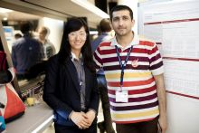
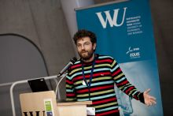
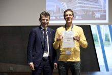
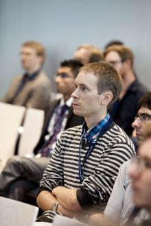

BAYSM
MEETINGS [ext. links]
PROCEEDINGS [ext. links]
|



General Information
BAYSM is a platform for M.S. students, Ph.D. students, Post-Docs
and young researchers interested in the field of Bayesian statistics to
interconnect with the Bayesian community at an early level of their
career. It is also an opportunity to get into touch with established senior
researchers and start to build a network of knowledge.
The platform aims at encouraging discussion and promoting further
research in a wide spectrum of fields where Bayesian methods are
employed.
The Bayesian Young Statisticians Meeting is the official conference of j-ISBA, the junior section of the International Society for Bayesian Analysis (ISBA).

|